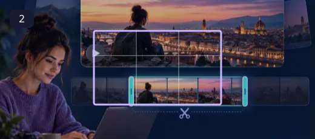
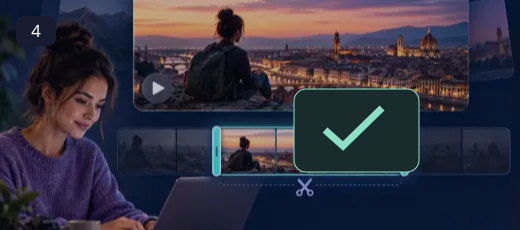

Video Trimmer
Start where it matters. Finish when the moment is complete.
A little dead time can hide a good clip. Trim the pause before an explanation, remove an accidental camera movement, or keep the strongest part of a longer recording. A clean beginning helps the viewer understand why they should keep watching.
How to use Video Trimmer ↓How to use Video Trimmer
Choose your video
Select a supported video file. The player loads a local preview.

Find the start point
Play or scrub through the preview, then enter the start time in seconds.
Set the end point
Choose where the clip should finish. Make sure the end time is later than the start time.

Trim and download
Run the trim operation and save the resulting MP4 clip.
Timing is part of the message
Use the preview to identify the start and end, then enter times in seconds. Leave enough room for the first spoken word and the final action to finish. The export is a new MP4 clip, so keep the full recording in case you need a different section later.
- Remove unwanted sections from a clip.
- Set precise start and end times.
- Preview the source before exporting.
Use the preview to note the timing before entering values. The tool exports a new clip; keep your original in case you need to make a different cut later.
Questions, answered
Are times entered in seconds?
Yes. Enter the start and end values in seconds as shown by the tool.
Why might a trim fail?
Unsupported codecs, very large files, browser memory limits or an incomplete media-engine download can interrupt processing.
Is my video uploaded?
No. Trimming is performed locally in the browser; the media engine is fetched from a CDN.
Will this replace my original file?
The tools create a separate output. Keep the original until you have checked the exported file; the site does not provide cloud project backups.
Can I publish the result?
Use source media you own or have permission to edit. Check the destination’s requirements and the rights of anyone shown before publishing.